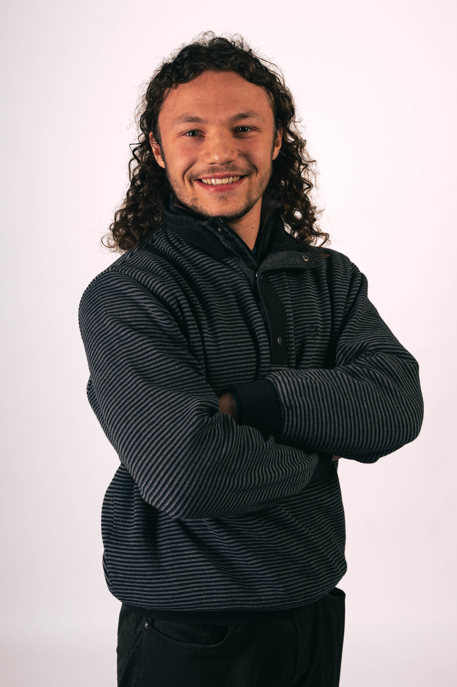

Clarté
Donner au public les bonnes informations au bon moment, sans alourdir la prise de parole ni répéter inutilement le programme.
À propos
Je suis Kilian Kwiczor, animateur et présentateur événementiel basé entre Lens et Lille, disponible partout en France. J'interviens sur des événements sportifs, des activations de marque, des interviews publiques, des cérémonies et des formats corporate avec un objectif constant : créer une relation claire entre le programme, les intervenants et le public.
Présentation · Interviews · Maîtrise de cérémonie · Animation en direct

Un présentateur doit être visible sans devenir le sujet principal. Mon rôle consiste à donner du rythme au programme, rendre les informations compréhensibles, valoriser les personnes qui prennent la parole et maintenir l'attention du public. Le niveau d'énergie, le vocabulaire et la posture évoluent selon le format : cérémonie institutionnelle, activation sportive, événement de marque ou rencontre grand public.
Donner au public les bonnes informations au bon moment, sans alourdir la prise de parole ni répéter inutilement le programme.
Faire avancer l'événement, accompagner les transitions et maintenir l'attention, y compris lors des changements ou des temps d'attente.
Adapter la présence, le ton et le niveau d'énergie à l'identité du client, aux intervenants et au contexte.
Le public voit la prise de parole. L'équipe de production, elle, doit pouvoir compter sur un présentateur préparé, joignable et capable de suivre les décisions du conducteur.
Compréhension de l'enchaînement des séquences, des messages prioritaires, des temps incompressibles et des transitions sensibles.
Vérification des noms, fonctions, sujets abordés et modalités d'entrée en scène afin de limiter les approximations le jour J.
Échange avec la régie, la production ou l'équipe terrain pour intégrer les contraintes de son, de captation, de diffusion et de timing.
Gestion des changements de programme et des temps d'attente sans exposer au public la tension éventuelle des coulisses.
Ma formation en communication et en production multimédia m'a familiarisé avec les formats de plateau, l'interview, la captation et la préparation éditoriale.
Ces expériences audiovisuelles se sont prolongées sur le terrain à travers des activations de marque, des événements sportifs, des prises de parole en galerie et des formats en direct. Elles me permettent aujourd'hui d'aborder un événement à la fois du point de vue du public, du présentateur et de la production.
Séminaires, conventions, rencontres internes, interviews et séquences participatives.
Remises de prix, inaugurations, prises de parole officielles et programmes nécessitant une conduite précise.
Présentation d'athlètes, interviews, animations publiques et dispositifs mêlant terrain et diffusion.
Animation micro, présentation de dispositifs, engagement du public et valorisation des messages de l'opération.


Mon objectif n'est pas d'occuper le micro.
C'est de rendre l'événement plus fluide, plus clair et plus vivant pour celles et ceux qui y participent.
Présentez-moi votre événement, son public et ses principaux enjeux. Nous pourrons rapidement déterminer le ton, le rôle et le niveau de préparation nécessaires.